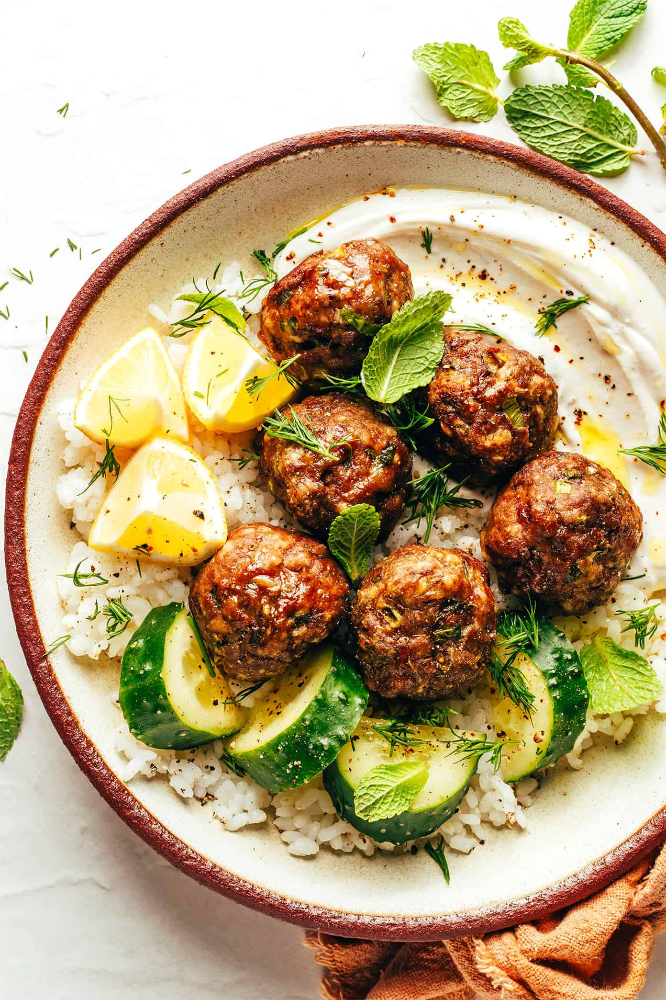

Greek Meatballs

Description
This Greek meatballs recipe is easy to make, perfectly moist and tender, and bursting with fresh and zesty flavors.
Ingredients
- Ground beef
- Panko
- Eggs
- Greek yogurt
- Tahini
- Lemon
Directions
- Mix thhe panko, eggs, and beef
- Form the meatballs
- Bake 15-20 minutes at 425 degrees
- Combine yogurt, tahini, and lemon to create yogurt sauce
- Serve meatballs over cous cous and drizzle sauce over top